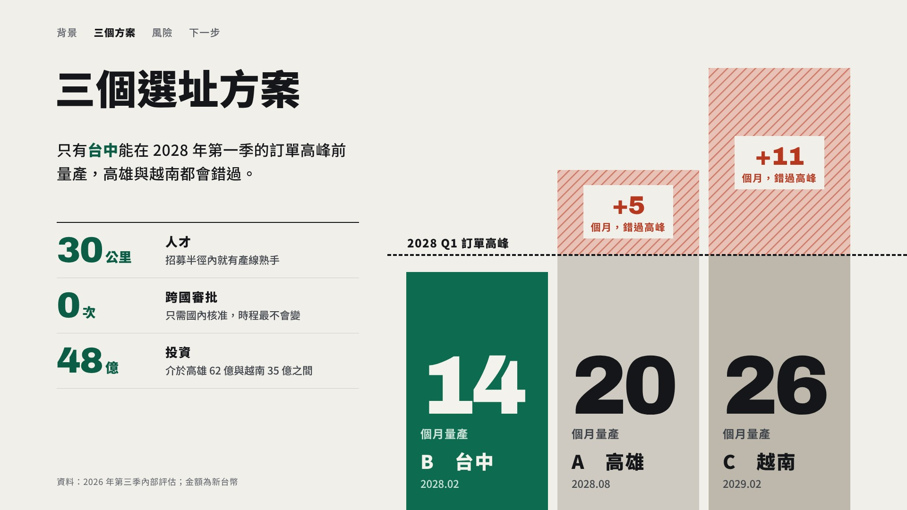
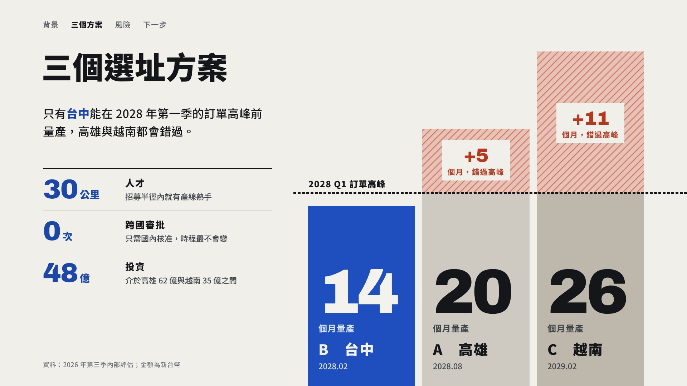
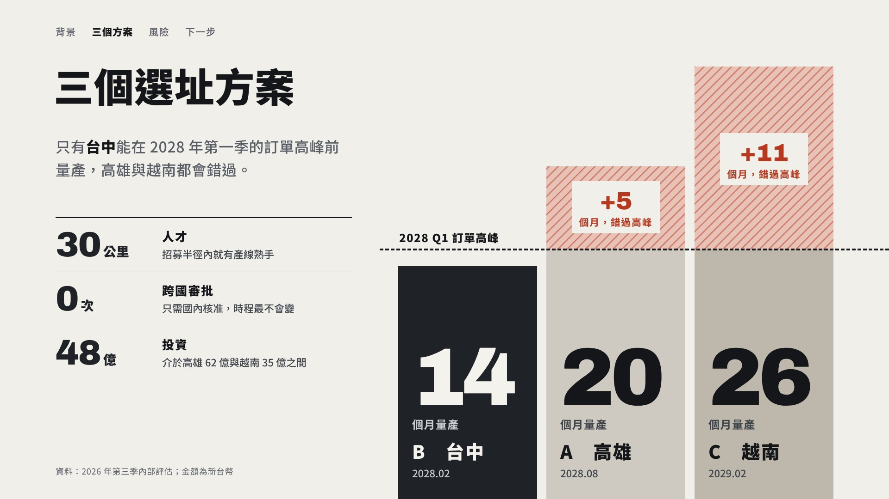
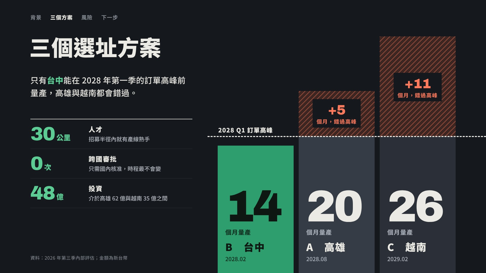
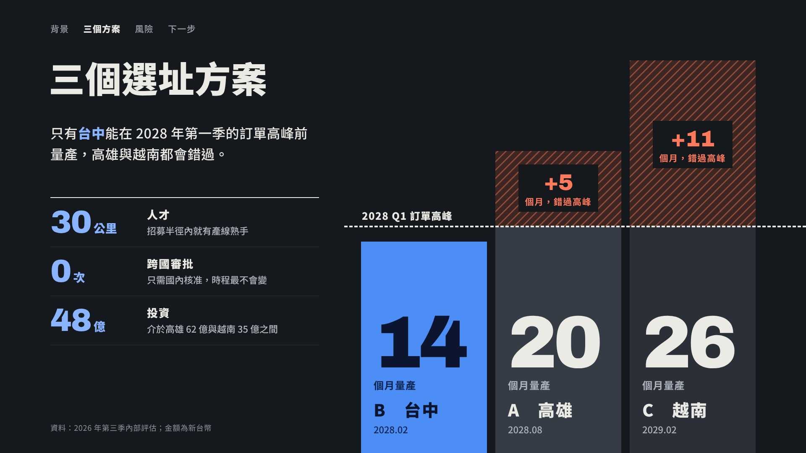
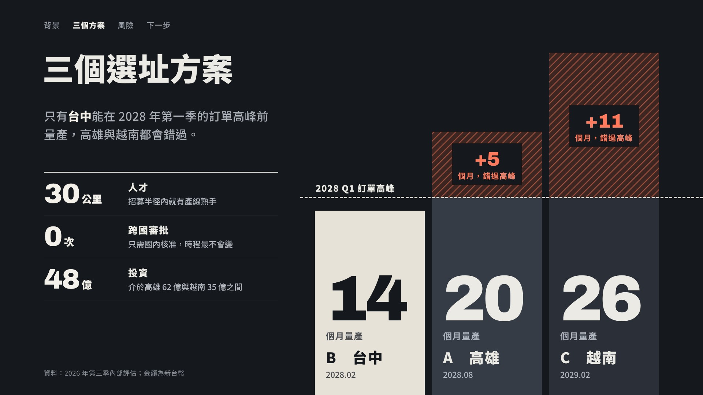

首批兩款的明暗兩版
同一份內容；每款有深色與淺色兩種底，每種底再依主題推薦三組配色。用色角色與範圍見 style-specs。
Apple 發表｜深色舞台
暖橘 漸層最低 6.1:1
冰藍 漸層最低 4.4:1
翠綠 漸層最低 7.9:1
Apple 發表｜淺色舞台（新）
暖橘 漸層最低 3.2:1
冰藍 漸層最低 3.8:1
翠綠 漸層最低 3.3:1
顧問報告｜淺色紙

綠

藍

墨黑
顧問報告｜深色石板（新）

綠

藍

紙白